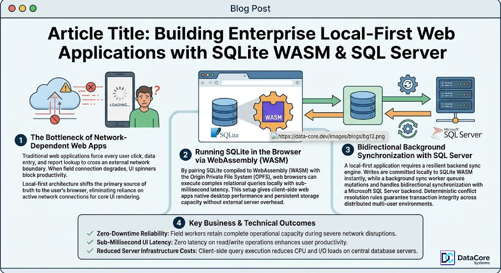

Building Enterprise Local-First Web Applications with SQLite WASM & SQL Server
The Bottleneck of Network-Dependent Web Apps
Traditional web applications force every user click, data entry, and report lookup to cross an external network boundary. When field connection degrades, UI spinners block productivity. Local-first architecture shifts the primary source of truth to the user's browser, eliminating reliance on active network connections for core UI rendering.

Running SQLite in the Browser via WebAssembly (WASM)
By pairing SQLite compiled to WebAssembly (WASM) with the Origin Private File System (OPFS), web browsers can execute complex relational queries locally with sub-millisecond latency. This setup gives client-side web apps native desktop performance and persistent storage capacity without external server overhead.
Bidirectional Background Synchronization with SQL Server
A local-first application requires a resilient backend sync engine. Writes are committed locally to SQLite WASM instantly, while a background sync worker queues mutations and handles bidirectional synchronization with a Microsoft SQL Server backend. Deterministic conflict resolution rules guarantee transaction integrity across distributed multi-user environments.
Key Business & Technical Outcomes
Zero-Downtime Reliability: Field workers retain complete operational capacity during severe network disruptions.
Sub-Millisecond UI Latency: Zero latency on read/write operations enhances user productivity.
Reduced Server Infrastructure Costs: Client-side query execution reduces CPU and I/O loads on central database servers.
Building a high-performance local-first web application? DataCore Systems specializes in SQLite WASM, offline background synchronization engines, and SQL Server backend integrations.
Get in Touch